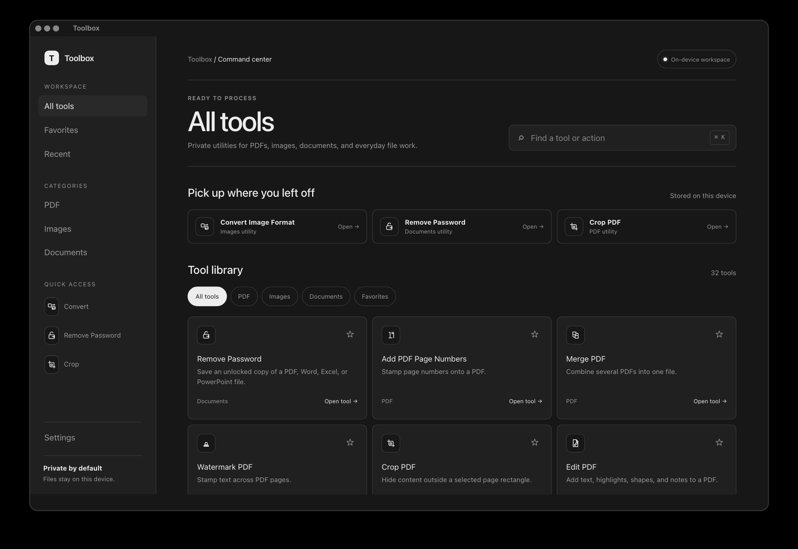
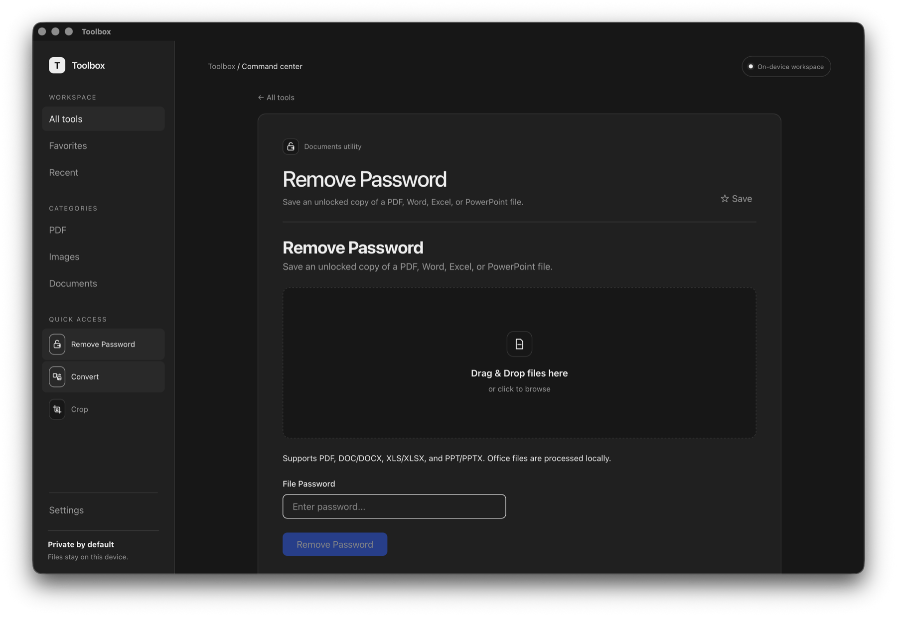
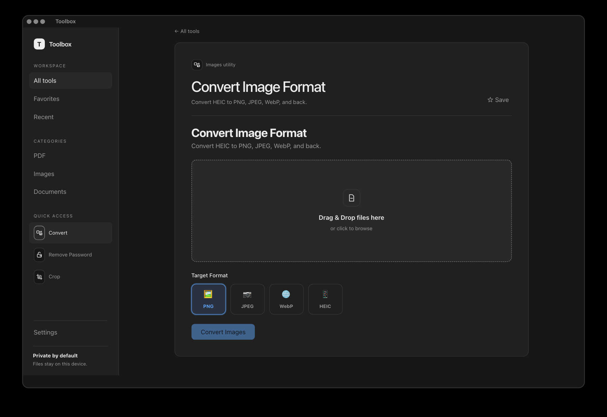
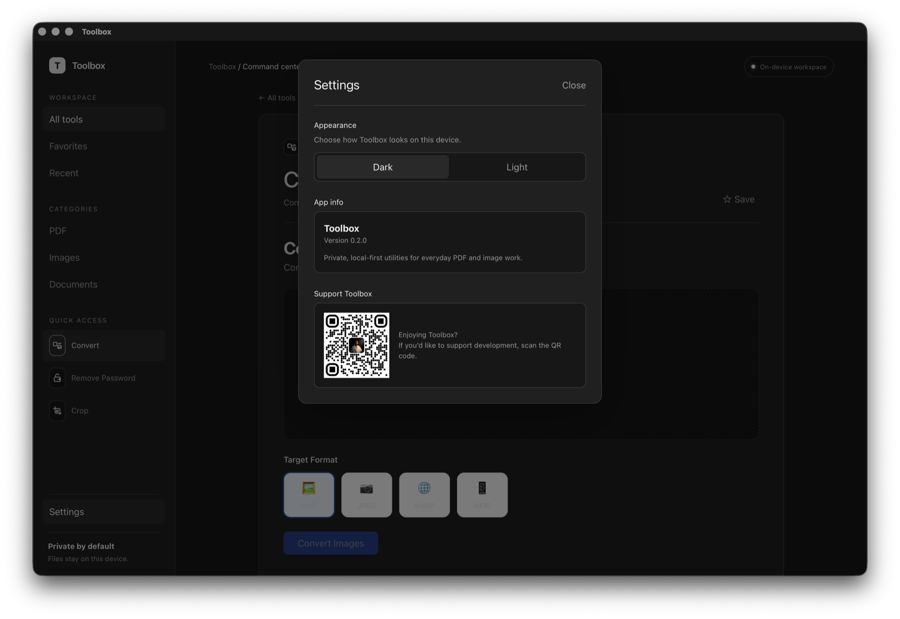

Your files stay on your device
Documents and images are processed on your computer. No account or file upload is required. Release builds send anonymous install and app-open analytics.
macOS and Windows · Local file processing
Remove passwords from PDF and Office files. Edit, organize, and protect PDFs. Convert, compress, and resize images in a desktop app for macOS and Windows. Your files stay on your computer.
Your device is detected automatically. Every installer is also listed below.
Free and MIT licensed · Tauri 1.0.0 · Released September 6, 2026
Download the current release
Inside Toolbox
Captured from Toolbox 1.0.0 on macOS, with the home workspace, focused file tools, and settings.




The toolbox
The catalog covers documents, PDFs, images, GIFs, and TIFF files. OCR PDF, Blur Faces, and Remove Background are listed as unavailable in the current build.
Built for trust
Toolbox processes files locally, preserves your originals, and reports which files succeeded or failed.
Documents and images are processed on your computer. No account or file upload is required. Release builds send anonymous install and app-open analytics.
Results get their own filename, such as -unlocked, -compressed or -resized.
If a result already exists, Toolbox adds -1, -2 and so on. Your earlier work stays right where it is.
Compress Images copies the original bytes to a new output if re-encoding would make the file larger.
Open an output file or reveal it in Finder on macOS or File Explorer on Windows.
Updates are checked against a signing key built into the app before anything installs.
Questions
No. Remove Password uses the password you supply. It supports PDF, Word, Excel, and PowerPoint files, including DOC, DOCX, XLS, XLSX, PPT, and PPTX. Unsupported encryption formats return an error.
File processing stays on your computer. Toolbox does not upload your documents or images.
Release builds initialize Firebase Analytics and record installation and app-open events with a Tauri platform label. Those event parameters contain no filenames, paths, or file contents. The current Settings panel has no analytics opt-out. Update checks also use the network.
Release builds check for updates about three seconds after launch. If an update is available, Toolbox asks before downloading and installing it, then restarts.
The Tauri updater verifies the download with the public key bundled in the app. The current Settings panel has no update toggle or manual check button.
On macOS, open the DMG and drag Toolbox to Applications. If needed, Control-click Toolbox in Applications and choose Open.
On Windows, install Toolbox from the Microsoft Store. Microsoft signs accepted MSIX packages and delivers updates through the Store.
Compress Images keeps the original bytes if re-encoding would increase the size. Its Lossless mode also copies the original bytes. Both modes save a separate output. Compress PDF optimizes stream data and does not guarantee a smaller file.
Tools that process files separately report a failure for that input and continue with the rest. Tools that combine files, such as Merge PDF, need valid inputs to produce a combined output.
The current Tauri release provides a macOS Apple silicon DMG and a Windows MSIX app through the Microsoft Store. This release line has no Intel Mac or Linux installer.
Open an issue on GitHub. To contribute, start with the Tauri development guide and open your pull request against main.
Yes. Toolbox uses the MIT license. Keep the copyright and license notice in your copy, and review the licenses of bundled dependencies.
For your own release, configure your updater endpoint and public key in ToolboxTauri/src-tauri/tauri.conf.json. Configure analytics for your distribution too.
PDF, Office, and image tools for macOS and Windows.